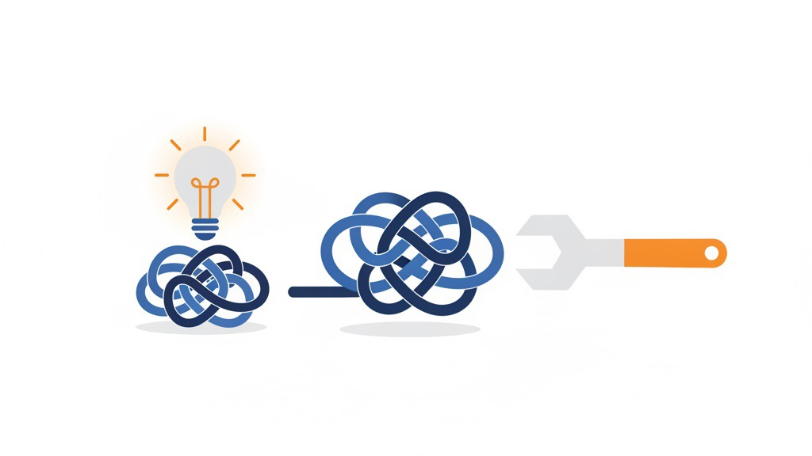

🔍
気づいていない問題は、解いても価値にならない
―― AIと自動化が空回りする、本当の理由 ――
AIや自動化を入れたのに、なぜか成果につながらない。相手に喜ばれない。——その原因はたいてい、道具の性能ではありません。 「その仕事で何が大事かという“ものさし”が、まだ見えていない」こと。そして、気づかれていない問題は、いくら解いても価値にならないこと。この2つです。
AIに「ええ感じにして」は通じない（入口の空回り）
まず自分の側の話から。何を良くすべきかが分かっていないと、AIに正しい注文が出せません。
たとえるなら、体重も体脂肪率も一度も測ったことがない人が、AIトレーナーに「ええ感じにして」と頼むようなもの。AIがどれだけ優秀でも、的が見えていないから、的外れな調整をします。
指標は、AIに渡す“座標”です。座標がなければ、どれだけ高性能なミサイルでも、どこにも当たりません。「AIを入れれば何とかなる」の前に、自分がその仕事のものさしを握れているか。ここが入口です。
気づかれていないコリは、ほぐしても感謝されない（出口の空回り）
次に、相手の側の話。お客様が「そこが大変だった」と認識していない作業を自動化しても、返ってくるのは「で、何が良くなったの?」です。
マッサージで「ここガチガチですよ」と言われて初めて「あ、ここしんどかったんや」と気づく。あの感覚と同じで、指摘される前は、コリの存在そのものが認知の外にあります。だからほぐしても、ありがたみが伝わりません。
これは私たちの現場でも起きます。広告の指標（たとえば費用対効果の数字）を一度も見ていない人に、広告運用を自動化して数字を改善しても、本人は「下がったことの意味」が分からないから、価値として受け取れない。逆に言えば、指標を理解してもらう＝大変さを見えるようにする作業が、価値提供の“前半分”になっているのです。

「詰まっているところ」には、2種類ある
この2つの空回りをつなぐと、ひとつの整理にたどり着きます。詰まっているところには2種類ある、ということです。
① 実際に詰まっているところ
実際にそこで時間やお金が漏れている。AIや自動化が効くのは、こちら。② 本人が気づいている詰まり
本人が「ここが損だ」と気づいている。対価や感謝が生まれるのは、こちらだけ。つまり——①をどれだけ潰しても、②に変換していなければ、価値にはならない。指標を共有して「実在する詰まり」を「本人が認識している詰まり」に翻訳する工程を飛ばすと、いい仕事をしても「時間が減ったらしい」で終わってしまいます。
だから「見える化」が、価値の前半分
健康診断を思い出してください。「あなた、この数値はやばいですよ」と見せられて、初めて治療にお金を払う気になります。もし医者が黙って治していたら、感謝されるどころか、治療させてすらもらえません。
私たちの仕事もまったく同じです。だからヤシノミは、いきなり自動化から入りません。まず「今、ここでこれだけ漏れています」を、数字で見えるようにする。詰まりが自分のものとして認識された瞬間に、それは初めて「解決したい自分の課題」に昇格します。
ここで大事なのは、見える化を「自分（提供側）だけが分かっている」状態で止めないこと。認知を相手の手に渡してこそ、解決が価値として届きます。だから私たちは、見える化を判断を助けるコンパスとして相手に手渡すことを、いちばん大切にしています。
難しさに気づかせるところまでが、仕事
この記事で言いたかったことを、3つの言い回しに畳んでおきます。
- 🔧 「気づかれていない問題を解くのは、存在しない問題を解くのと同じ」
- 📏 「指標は、価値を相手に翻訳するための共通言語」
- 🪜 「難しさに気づかせるところまでが仕事。自動化は、その後の話」
AIも自動化も、強力な道具です。でも道具が活きるのは、ものさしを持ち、詰まりを認識したあと。順番を逆にしないこと——これが、ヤシノミが現場で何度もぶつかってたどり着いた、いちばんの基本です。